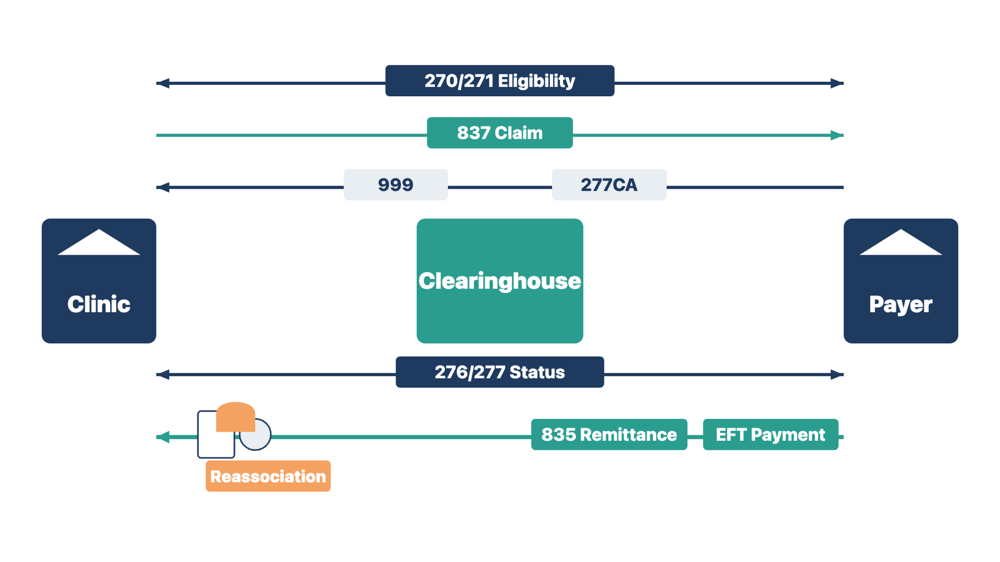
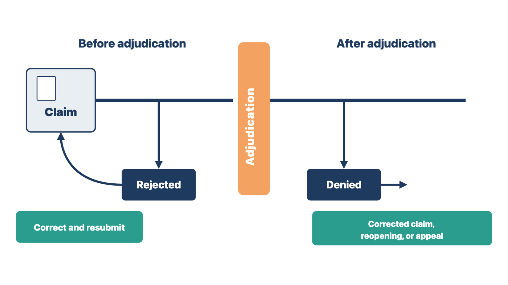
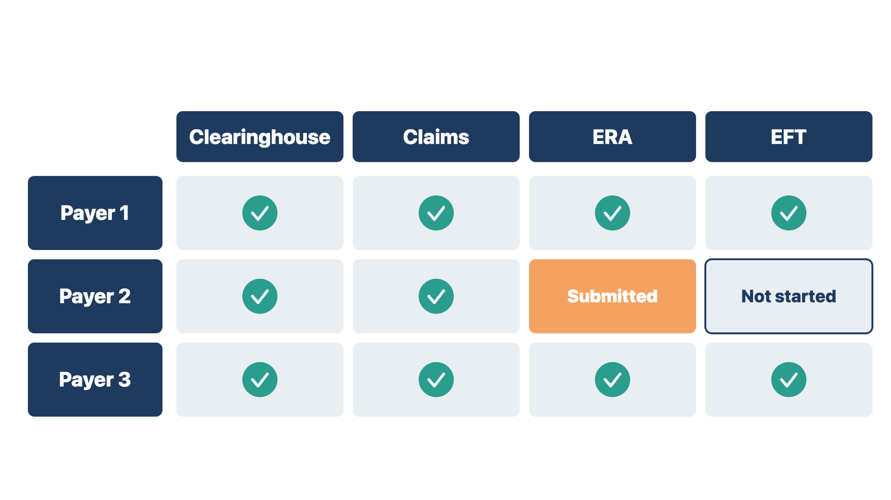

Claims, payments, and eligibility checks all flow through electronic transactions. If staff read a transaction wrongly, the clinic loses money or works the wrong queue.
A clearinghouse is a company that checks claims and routes them between the clinic and many payers. A clearinghouse link may support eligibility checks, claims, acknowledgements, rejections, and payment details. The exact scope depends on the product, the contracts, and the payers.
Implementation work may include:
You coordinate setup and evidence. Qualified coding, billing, compliance, and finance experts own the decisions in their areas. Do not choose codes. Do not call a claim compliant just because the software accepts it.
Know the standard transactions. HIPAA (the Health Insurance Portability and Accountability Act) requires health plans and providers to use adopted standards when they do these transactions electronically. For most, the standard is ASC X12 version 5010. You will see the transaction numbers in vendor screens and clearinghouse reports.
CMS guidance puts it simply. A 999 problem is technical, so it goes to whoever prepares the file. A 277CA problem is a data problem, so billing staff correct it.

Rule: A 999 checks the file's format; only the 277CA tells you whether each claim was accepted for processing.
Check yourself
Rejections and denials need different fixes, different owners, and different deadlines. If one queue holds both, staff appeal claims that were never decided and miss real appeal dates.
Adjudication is the payer's decision on whether, and how much, to pay.
A rejection happens before adjudication. The clearinghouse or the payer's first checks stop the claim because something is missing or invalid. An example is a provider number the payer does not recognize. The claim was never decided. Staff correct it and send it again. A rejection usually shows up on a 277CA or a clearinghouse report.
A denial happens after adjudication. The payer processed the claim and decided not to pay all or part of it. The reason appears on the 835 as adjustment reason codes. Staff work a denial through the payer's corrected-claim, reopening, or appeal process. In Medicare, appeal rights come from the payer's first decision. A rejected claim never got one.

The billing manager decides the queue design, owners, and aging limits. You build and test what is approved.
Rule: Staff fix and resend a rejected claim; they appeal or correct a denied claim through the payer.
Compare two cases. A claim comes back on the 277CA with "rendering provider not on file." A different claim comes back on the 835 with a reason code saying the service is not covered. The first was never decided, so staff fix and resend it. The second was decided, so staff follow the payer's appeal or correction path.
Check yourself
"Enrollment is done" can mean four different things. If you track only one, claims may go out while payments still arrive as paper checks.
Track each step separately, for each payer and each billing location or provider number:
Some payers need several of these steps. Some need none beyond the clearinghouse. Approval can take days or weeks.
Keep an enrollment tracker with one row per payer and location. The client's billing or credentialing lead owns the submissions. You track status. You log each gap as a dependency with an owner and a need date. Where a gap will remain at go-live, ask billing for an interim plan.

Check yourself
A form with the wrong version, wording, or routing can capture the wrong consent or send a signed form to the wrong record. Forms carry legal and clinical language, so they need owners.
Collect the client's approved forms for each stage of the workflow. Record:
Build and test:
The project team converts approved content. Qualified client authorities approve clinical, privacy, financial, consent, and other controlled wording.
Rule: Load a form only after the client authority who owns its wording approves it.
Check yourself
Reports and automation depend on clean lists. Three spellings of one appointment type split a report three ways. An old template can copy outdated content into every note.
Codes and controlled values. Systems rely on code sets, status values, task types, appointment types, locations, providers, fees, and similar lists. For each list, define:
Do not let every user create near-duplicate values. "New Patient," "New patient," and "New-Patient" may split reporting and break automation. Billing codes and payer rules need review by qualified coding and billing staff. You load and validate the approved values.
Templates. Templates reduce repeated work. They can also carry old or wrong content forward. Keep a template inventory with:
Test each template with sample scenarios. Include missing information, wrong carry-forward, conditional sections, signature, routing, and the final record. Teach users that a template is a structure. It does not prove its content is right for every patient.
Rule: Every code list and template has a named owner, a version, and a rule for how it changes.
Compare two cases. At one clinic, front-desk staff each add their own appointment types, and the no-show report becomes useless. At another, a physical-exam template still carries last year's screening wording into every note. In both cases, a list or template without an owner drifted until the data could not be trusted.
Check yourself
Payment setup handles money and card data. A missed failure path can double-charge a patient or post a payment to the wrong account.
Payment work can include merchant setup, card or bank options, portals, payment plans, receipts, refunds, reversals, failed payments, posting, reconciliation, and access.
Bring in finance, security, privacy, billing, and vendor authorities as needed. Use approved payment providers. Follow current company and contract rules. Never store card numbers or other payment credentials in project documents.
Test:
Rule: Before go-live, test each way a payment can fail, and reconcile the results.
Check yourself